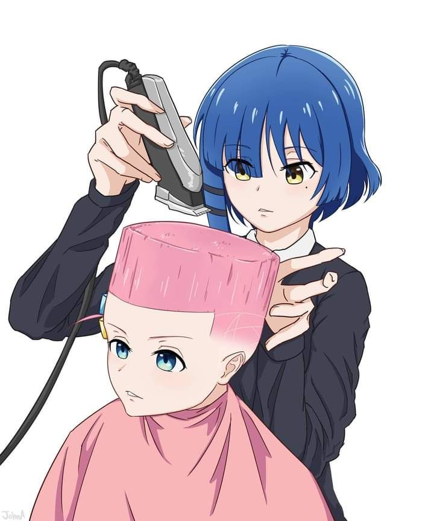
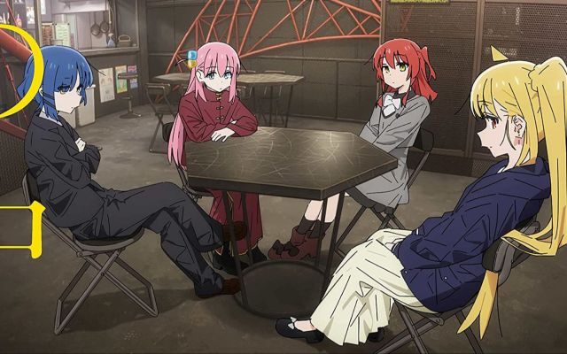
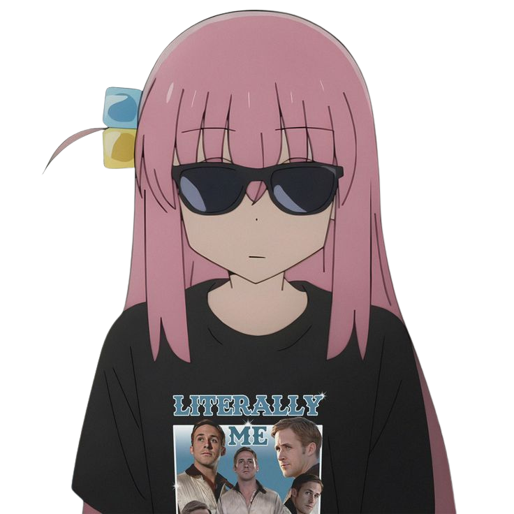
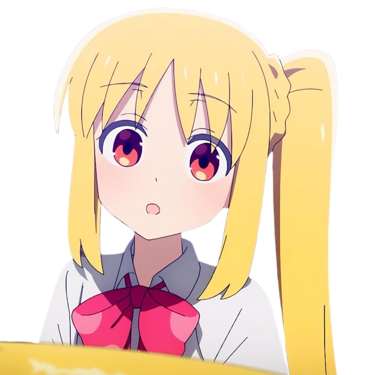
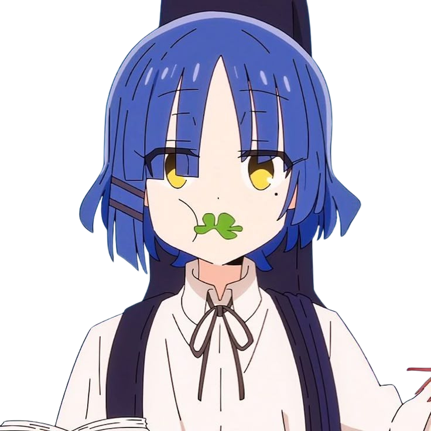
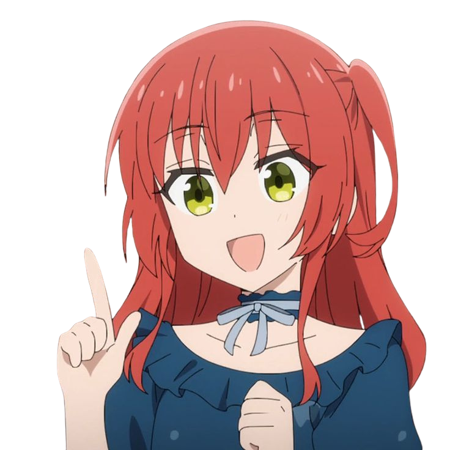

Seja Bem-Vindo(a)
Kessoku Band (結束バンドKessoku Bando ) é a banda principal da série Bocchi the Rock!. O nome "Kessoku Band" é um trocadilho com "Kessoku" (unidade) e "Kessoku Band" (abraçadeira de nylon). A banda foi desenhada como o centro desta obra. A banda é baseada na casa de shows STARRY , em Shimokitazawa , onde a irmã mais velha de Nijika , Seika , é gerente.
Bocchi the Rock
Uma adaptação em anime produzida pela CloverWorks foi ao ar de outubro a dezembro de 2022. Uma segunda temporada foi anunciada. Tanto o mangá quanto o anime foram amplamente aclamados pela animação, roteiro, dublagem, comédia, personagens, música e exploração da ansiedade social.

Integrantes

Hitori Gotoh

Nijika Ijichi

Ryo Yamada

Ikuyo Kita